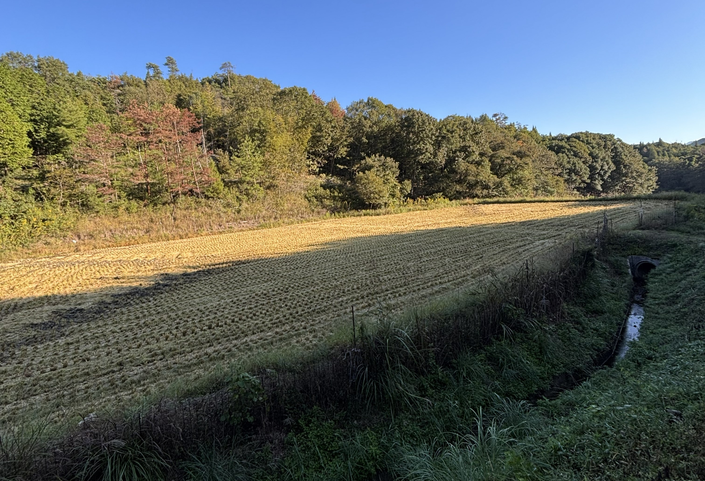

春 ＜田んぼを整える＞
土を見て、水を入れ、田植えに向けて準備を進めます。

LOCATION
HONGOCHO KAMIKITAGATA MIHARA HIROSHIMA
広島県三原市本郷町上北方
MASUDAがお米を育てているのは
瀬戸内の山々に囲まれた、季節ごとに風景がゆっくりと変わっていく自然豊かな地域です。
春の田植え、夏の青々とした稲、秋の実り。毎年同じようでいて、ひとつとして同じ年はありません。
私たちは、この土地の水や土、天候と向き合いながら、その年の田んぼに必要な手間を一つひとつ重ねています。

LANDSCAPE
01
三原市は、海沿いから山間部まで広がる地形の中で、地域ごとの環境を活かした農業が営まれています。
本郷町上北方にも田園が広がり、農のある暮らしが身近にあります。MASUDAの米づくりも、そんな日々の風景の中にあります。
WATER
02
三原地域では、川の流れやため池など、地域に蓄えられた水が農業を支えてきました。
田んぼに入る水の様子を見て、稲の状態を確かめる。毎日の小さな変化を見逃さないことも、MASUDAが大切にしている仕事の一つです。

SEASONS
土を見て、水を入れ、田植えに向けて準備を進めます。
日差しの中で育つ稲を見ながら、水や田んぼの状態を確かめます。
穂が色づき、いよいよ収穫。毎年の積み重ねが形になる季節です。
HISTORY
本郷町上北方には、梨羽城跡など地域の歴史を感じられる場所も多く残っています。
今ある風景は、長い歴史の中で先代が時間をかけ地域の暮らしと共に作り上げてきたものです。
MASUDAもこの土地で仕事をし、米づくりも続けています。
FROM KAMIKITAGATA
この土地で育てたお米を、
いつもの食卓へ。

田んぼと向き合い、手をかけて育てたMASUDAのお米をお届けします。